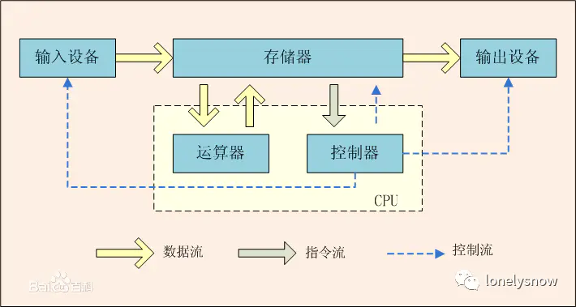
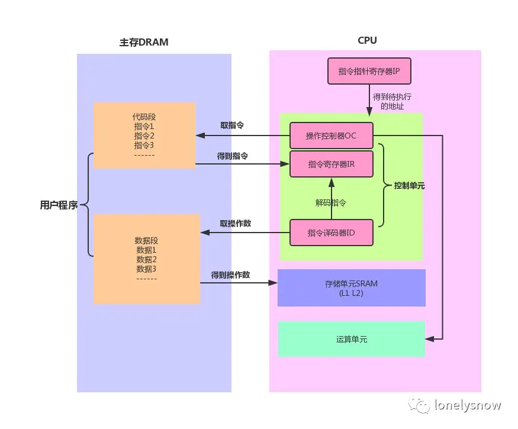
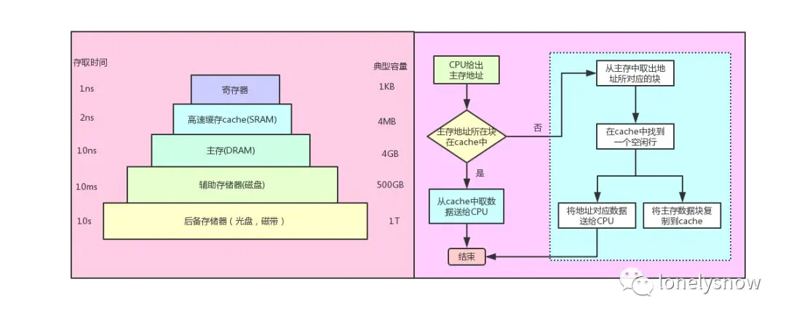
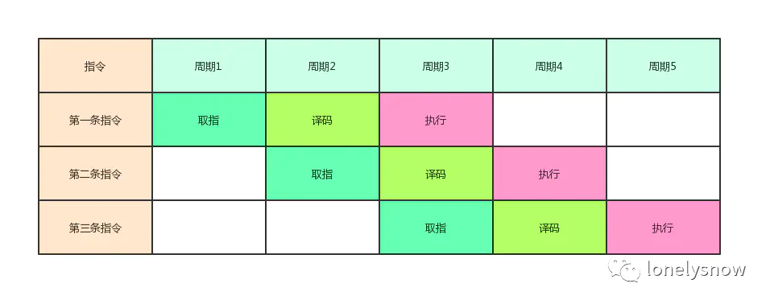
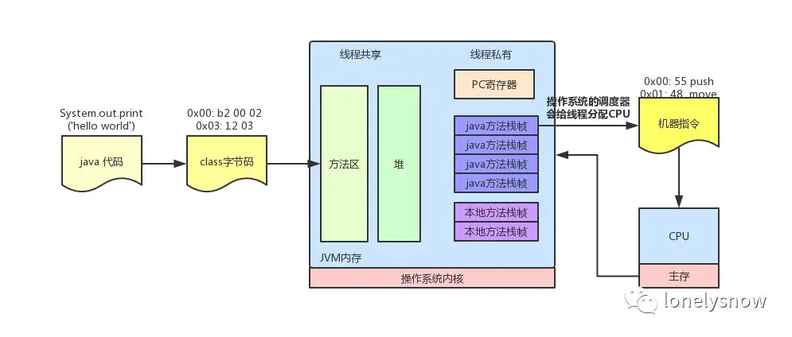
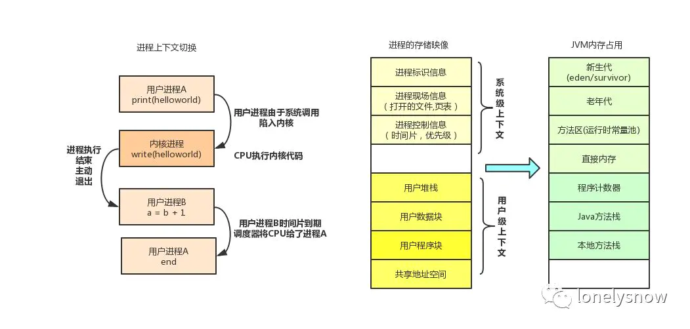
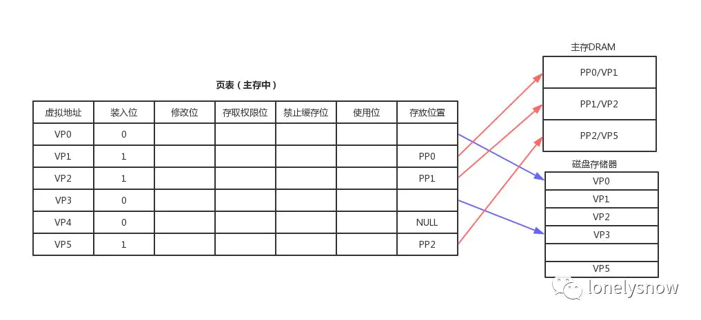
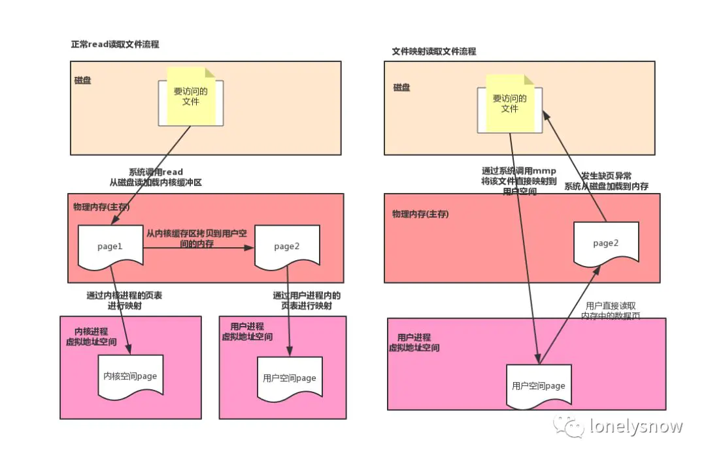
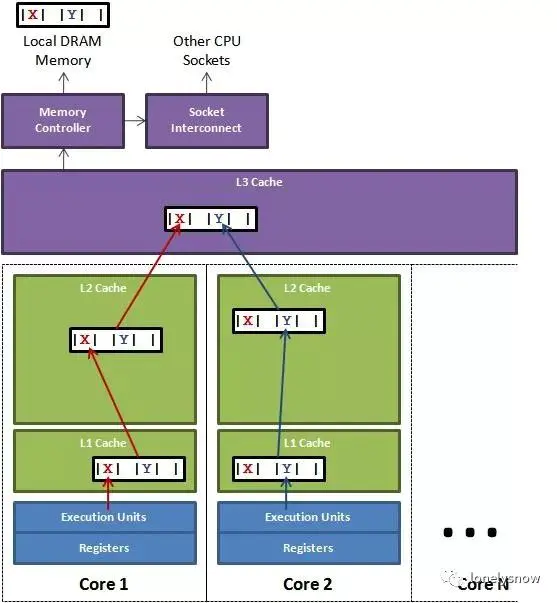
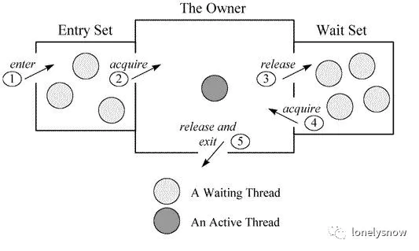

Java 和操作系统交互细节
结合 CPU 理解一行 Java 代码是怎么执行的
根据冯·诺依曼思想，计算机采用二进制作为数制基础，必须包含:运算器、控制器、存储设备，以及输入输出设备，如下图所示。

(该图来源于百度)
我们先来分析 CPU 的工作原理，现代 CPU 芯片中大都集成了，控制单元，运算单元，存储单元。控制单元是 CPU 的控制中心， CPU 需要通过它才知道下一步做什么，也就是执行什么指令，控制单元又包含:指令寄存器( IR )，指令译码器( ID )和操作控制器( OC ).
当程序被加载进内存后，指令就在内存中了，这个时候说的内存是独立于 CPU 外的主存设备，也就是 PC 机中的内存条，指令指针寄存器IP 指向内存中下一条待执行指令的地址，控制单元根据 IP寄存器的指向，将主存中的指令装载到指令寄存器，这个指令寄存器也是一个存储设备，不过他集成在 CPU 内部，指令从主存到达 CPU 后只是一串 010101 的二进制串，还需要通过译码器解码，分析出
操作码是什么，操作数在哪，之后就是具体的运算单元进行算术运算(加减乘除)，逻辑运算(比较，位移).而 CPU 指令执行过程大致为:取址(去主存获取指令放到寄存器)，译码(从主存获取操作数放入高速缓存 L1 )，执行(运算).

这里解释下上图中 CPU 内部集成的存储单元 SRAM ，正好和主存中的 DRAM 对应， RAM 是随机访问内存，就是给一个地址就能访问到数据，而磁盘这种存储媒介必须顺序访问，而 RAM 又分为动态和静态两种，静态 RAM 由于集成度较低，一般容量小，速度快，而动态 RAM 集成度较高，主要通过给电容充电和放电实现，速度没有静态 RAM 快，所以一般将动态 RAM 做为主存，而静态 RAM 作为 CPU 和主存之间的高速缓存(cache)，用来屏蔽 CPU 和主存速度上的差异，也就是我们经常看到的 L1 ， L2 缓存。每一级别缓存速度变低，容量变大。
下图展示了存储器的层次化架构，以及 CPU 访问主存的过程，这里有两个知识点，一个是多级缓存之间为保证数据的一致性，而推出的缓存一致性协议，具体可以参考这篇文章，另外一个知识点是， cache 和主存的映射，首先要明确的是 cahce 缓存的单位是缓存行，对应主存中的一个内存块，并不是一个变量，这个主要是因为 ** CPU 访问的空间局限性:被访问的某个存储单元，在一个较短时间内，很有可能再次被访问到，以及空间局限性:被访问的某个存储单元，在较短时间内，他的相邻存储单元也会被访问到。**
而映射方式有很多种，类似于 cache 行号 = 主存块号 mod cache总行数 ，这样每次获取到一个主存地址，根据这个地址计算出在主存中的块号就可以计算出在 cache 中的行号。

下面我们接着聊 CPU 的指令执行。取址，译码，执行，这是一个指令的执行过程，所有指令都会严格按照这个顺序执行，但是多个指令之间其实是可以并行的，对于单核 CPU 来说，同一时刻只能有一条指令能够占有执行单元运行，这里说的执行是 CPU 指令处理(取指，译码，执行)三步骤中的第三步，也就是运算单元的计算任务，所以为了提升 CPU 的指令处理速度，所以需要保证运算单元在执行前的准备工作都完成，这样运算单元就可以一直处于运算中，而刚刚的串行流程中，取指，解码的时候运算单元是空闲的，而且取指和解码如果没有命中高速缓存还需要从主存取，而主存的速度和 CPU 不在一个级别上，所以指令流水线 可以大大提高 CPU 的处理速度，下图是一个3级流水线的示例图，而现在的奔腾 CPU 都是32级流水线，具体做法就是将上面三个流程拆分的更细。

除了指令流水线， CPU 还有分支预测，乱序执行等优化速度的手段。好了，我们回到正题，一行 Java 代码是怎么执行的。
一行代码能够执行，必须要有可以执行的上下文环境，包括，指令寄存器，数据寄存器，栈空间等内存资源，然后这行代码必须作为一个执行流能够被操作系统的任务调度器识别，并给他分配 CPU 资源，当然这行代码所代表的指令必须是 CPU 可以解码识别的，所以一行 Java 代码必须被解释成对应的 CPU 指令才能执行。下面我们看下System.out.println(“Hello world”)这行代码的转译过程。
Java 是一门高级语言，这类语言不能直接运行在硬件上，必须运行在能够识别 Java 语言特性的虚拟机上，而 Java 代码必须通过 Java 编译器将其转换成虚拟机所能识别的指令序列，也称为 Java 字节码，之所以称为字节码是因为 Java 字节码的操作指令(OpCode)被固定为一个字节，以下为 System.out.println(“Hello world”) 编译后的字节码
0x00: b2 00 02 getstatic Java .lang.System.out
0x03: 12 03 ldc "Hello, World!"
0x05: b6 00 04 invokevirtual Java .io.PrintStream.println
0x08: b1 return最左列是偏移；中间列是给虚拟机读的字节码；最右列是高级语言的代码，下面是通过汇编语言转换成的机器指令，中间是机器码，第三列为对应的机器指令，最后一列是对应的汇编代码
0x00: 55 push rbp
0x01: 48 89 e5 mov rbp,rsp
0x04: 48 83 ec 10 sub rsp,0x10
0x08: 48 8d 3d 3b 00 00 00 lea rdi,[rip+0x3b]
; 加载 "Hello, World!\n"
0x0f: c7 45 fc 00 00 00 00 mov DWORD PTR [rbp-0x4]，0x0
0x16: b0 00 mov al,0x0
0x18: e8 0d 00 00 00 call 0x12
; 调用 printf 方法
0x1d: 31 c9 xor ecx,ecx
0x1f: 89 45 f8 mov DWORD PTR [rbp-0x8]，eax
0x22: 89 c8 mov eax,ecx
0x24: 48 83 c4 10 add rsp,0x10
0x28: 5d pop rbp
0x29: c3 retJVM 通过类加载器加载 class 文件里的字节码后，会通过解释器解释成汇编指令，最终再转译成 CPU 可以识别的机器指令，解释器是软件来实现的，主要是为了实现同一份 Java 字节码可以在不同的硬件平台上运行，而将汇编指令转换成机器指令由硬件直接实现，这一步速度是很快的，当然 JVM 为了提高运行效率也可以将某些热点代码(一个方法内的代码)一次全部编译成机器指令后然后在执行，也就是和解释执行对应的即时编译(JIT)， JVM 启动的时候可以通过 -Xint 和 -Xcomp 来控制执行模式。
从软件层面上， class 文件被加载进虚拟机后，类信息会存放在方法区，在实际运行的时候会执行方法区中的代码，在 JVM 中所有的线程共享堆内存和方法区，而每个线程有自己独立的 Java 方法栈，本地方法栈(面向 native 方法)，PC寄存器(存放线程执行位置)，当调用一个方法的时候， Java 虚拟机会在当前线程对应的方法栈中压入一个栈帧，用来存放 Java 字节码操作数以及局部变量，这个方法执行完会弹出栈帧，一个线程会连续执行多个方法，对应不同的栈帧的压入和弹出，压入栈帧后就是 JVM 解释执行的过程了。

中断
刚刚说到， CPU 只要一上电就像一个永动机， 不停的取指令，运算，周而复始，而中断便是操作系统的灵魂，故名思议，中断就是打断 CPU 的执行过程，转而去做点别的，例如系统执行期间发生了致命错误，需要结束执行，例如用户程序调用了一个系统调用的方法，例如mmp等，就会通过中断让 CPU 切换上下文，转到内核空间，例如一个等待用户输入的程序正在阻塞，而当用户通过键盘完成输入，内核数据已经准备好后，就会发一个中断信号，唤醒用户程序把数据从内核取走，不然内核可能会数据溢出，当磁盘报了一个致命异常，也会通过中断通知 CPU ，定时器完成时钟滴答也会发时钟中断通知 CPU .
中断的种类，我们这里就不做细分了，中断有点类似于我们经常说的事件驱动编程，而这个事件通知机制是怎么实现的呢，硬件中断的实现通过一个导线和 CPU 相连来传输中断信号，软件上会有特定的指令，例如执行系统调用创建线程的指令，而 CPU 每执行完一个指令，就会检查中断寄存器中是否有中断，如果有就取出然后执行该中断对应的处理程序。
陷入内核 : 我们在设计软件的时候，会考虑程序上下文切换的频率，频率太高肯定会影响程序执行性能，而陷入内核是针对 CPU 而言的， CPU 的执行从用户态转向内核态，以前是用户程序在使用 CPU ，现在是内核程序在使用 CPU ，这种切换是通过系统调用产生的，系统调用是执行操作系统底层的程序，Linux的设计者，为了保护操作系统，将进程的执行状态用内核态和用户态分开，同一个进程中，内核和用户共享同一个地址空间，一般 4G 的虚拟地址，其中 1G 给内核态， 3G 给用户态。在程序设计的时候我们要尽量减少用户态到内核态的切换，例如创建线程是一个系统调用，所以我们有了线程池的实现。
从 Linux 内存管理角度理解 JVM 内存模型
进程上下文
我们可以将程序理解为一段可执行的指令集合，而这个程序启动后，操作系统就会为他分配 CPU ，内存等资源，而这个正在运行的程序就是我们说的进程，进程是操作系统对处理器中运行的程序的一种抽象，而为进程分配的内存以及 CPU 资源就是这个进程的上下文，保存了当前执行的指令，以及变量值，而 JVM 启动后也是linux上的一个普通进程，进程的物理实体和支持进程运行的环境合称为上下文，而上下文切换就是将当前正在运行的进程换下，换一个新的进程到处理器运行，以此来让多个进程并发的执行，上下文切换可能来自操作系统调度，也有可能来自程序内部，例如读取IO的时候，会让用户代码和操作系统代码之间进行切换。

虚拟存储
当我们同时启动多个 JVM 执行: System.out.println(new Object()); 将会打印这个对象的 hashcode ，hashcode 默认为内存地址，最后发现他们打印的都是 Java .lang.Object@4fca772d ，也就是多个进程返回的内存地址竟然是一样的。
通过上面的例子我们可以证明，linux中每个进程有单独的地址空间，在此之前，我们先了解下 CPU 是如何访问内存的?
假设我们现在还没有虚拟地址，只有物理地址，编译器在编译程序的时候，需要将高级语言转换成机器指令，那么 CPU 访问内存的时候必须指定一个地址，这个地址如果是一个绝对的物理地址，那么程序就必须放在内存中的一个固定的地方，而且这个地址需要在编译的时候就要确认，大家应该想到这样有多坑了吧， 如果我要同时运行两个 office word 程序，那么他们将操作同一块内存，那就乱套了，伟大的计算机前辈设计出，让 CPU
采用 段基址 + 段内偏移地址 的方式访问内存，其中段基地址在程序启动的时候确认，尽管这个段基地址还是绝对的物理地址，但终究可以同时运行多个程序了， CPU 采用这种方式访问内存，就需要段基址寄存器和段内偏移地址寄存器来存储地址，最终将两个地址相加送上地址总线。而内存分段，相当于每个进程都会分配一个内存段，而且这个内存段需要是一块连续的空间，主存里维护着多个内存段，当某个进程需要更多内存，并且超出物理内存的时候，就需要将某个不常用的内存段换到硬盘上，等有充足内存的时候在从硬盘加载进来，也就是 swap .每次交换都需要操作整个段的数据。
首先连续的地址空间是很宝贵的，例如一个 50M 的内存，在内存段之间有空隙的情况下，将无法支持 5 个需要 10M 内存才能运行的程序，如何才能让段内地址不连续呢? 答案是内存分页。
在保护模式下，每一个进程都有自己独立的地址空间，所以段基地址是固定的，只需要给出段内偏移地址就可以了，而这个偏移地址称为线性地址，线性地址是连续的，而内存分页将连续的线性地址和分页后的物理地址相关联，这样逻辑上的连续线性地址可以对应不连续的物理地址。物理地址空间可以被多个进程共享，而这个映射关系将通过页表( page table)进行维护。 标准页的尺寸一般为 4KB ，分页后，物理内存被分成若干个 4KB 的数据页，进程申请内存的时候，可以映射为多个 4KB 大小的物理内存，而应用程序读取数据的时候会以页为最小单位，当需要和硬盘发生交换的时候也是以页为单位。
现代计算机多采用虚拟存储技术，虚拟存储让每个进程以为自己独占整个内存空间，其实这个虚拟空间是主存和磁盘的抽象，这样的好处是，每个进程拥有一致的虚拟地址空间，简化了内存管理，进程不需要和其他进程竞争内存空间，因为他是独占的，也保护了各自进程不被其他进程破坏，另外，他把主存看成磁盘的一个缓存，主存中仅保存活动的程序段和数据段，当主存中不存在数据的时候发生缺页中断，然后从磁盘加载进来，当物理内存不足的时候会发生 swap 到磁盘。页表保存了虚拟地址和物理地址的映射，页表是一个数组，每个元素为一个页的映射关系，这个映射关系可能是和主存地址，也可能和磁盘，页表存储在主存，我们将存储在高速缓冲区 cache 中的页表称为快表 TLAB 。

装入位 表示对于页是否在主存，如果地址页每页表示，数据还在磁盘
存放位置 建立虚拟页和物理页的映射，用于地址转换，如果为null表示是一个未分配页
修改位 用来存储数据是否修改过
权限位 用来控制是否有读写权限
禁止缓存位 主要用来保证 cache 主存 磁盘的数据一致性
内存映射
正常情况下，我们读取文件的流程为，先通过系统调用从磁盘读取数据，存入操作系统的内核缓冲区，然后在从内核缓冲区拷贝到用户空间，而内存映射，是将磁盘文件直接映射到用户的虚拟存储空间中，通过页表维护虚拟地址到磁盘的映射，通过内存映射的方式读取文件的好处有，因为减少了从内核缓冲区到用户空间的拷贝，直接从磁盘读取数据到内存，减少了系统调用的开销，对用户而言，仿佛直接操作的磁盘上的文件，另外由于使用了虚拟存储，所以不需要连续的主存空间来存储数据。

在 Java 中，我们使用 MappedByteBuffer 来实现内存映射，这是一个堆外内存，在映射完之后，并没有立即占有物理内存，而是访问数据页的时候，先查页表，发现还没加载，发起缺页异常，然后在从磁盘将数据加载进内存，所以一些对实时性要求很高的中间件，例如rocketmq,消息存储在一个大小为1G的文件中，为了加快读写速度，会将这个文件映射到内存后，在每个页写一比特数据，这样就可以把整个1G文件都加载进内存，在实际读写的时候就不会发生缺页了，这个在rocketmq内部叫做文件预热。
下面我们贴一段 rocketmq 消息存储模块的代码，位于 MappedFile 类中，这个类是 rocketMq 消息存储的核心类感兴趣的可以自行研究，下面两个方法一个是创建文件映射，一个是预热文件，每预热 1000 个数据页，就让出 CPU 权限。
private void init(final String fileName, final int fileSize) throws IOException {
this.fileName = fileName;
this.fileSize = fileSize;
this.file = new File(fileName);
this.fileFromOffset = Long.parseLong(this.file.getName());
boolean ok = false;
ensureDirOK(this.file.getParent());
try {
this.fileChannel = new RandomAccessFile(this.file, "rw").getChannel();
this.mappedByteBuffer = this.fileChannel.map(MapMode.READ_WRITE, 0, fileSize);
TOTAL_MAPPED_VIRTUAL_MEMORY.addAndGet(fileSize);
TOTAL_MAPPED_FILES.incrementAndGet();
ok = true;
} catch (FileNotFoundException e) {
log.error("create file channel " + this.fileName + " Failed. ", e);
throw e;
} catch (IOException e) {
log.error("map file " + this.fileName + " Failed. ", e);
throw e;
} finally {
if (!ok && this.fileChannel != null) {
this.fileChannel.close();
}
}
}
//文件预热，OS_PAGE_SIZE = 4kb 相当于每 4kb 就写一个 byte 0 ，将所有的页都加载到内存，真正使用的时候就不会发生缺页异常了
public void warmMappedFile(FlushDiskType type, int pages) {
long beginTime = System.currentTimeMillis();
ByteBuffer byteBuffer = this.mappedByteBuffer.slice();
int flush = 0;
long time = System.currentTimeMillis();
for (int i = 0, j = 0; i < this.fileSize; i += MappedFile.OS_PAGE_SIZE, j++) {
byteBuffer.put(i, (byte) 0);
// force flush when flush disk type is sync
if (type == FlushDiskType.SYNC_FLUSH) {
if ((i / OS_PAGE_SIZE) - (flush / OS_PAGE_SIZE) >= pages) {
flush = i;
mappedByteBuffer.force();
}
}
// prevent gc
if (j % 1000 == 0) {
log.info("j={}， costTime={}", j, System.currentTimeMillis() - time);
time = System.currentTimeMillis();
try {
// 这里sleep(0)，让线程让出 CPU 权限，供其他更高优先级的线程执行，此线程从运行中转换为就绪
Thread.sleep(0);
} catch (InterruptedException e) {
log.error("Interrupted", e);
}
}
}
// force flush when prepare load finished
if (type == FlushDiskType.SYNC_FLUSH) {
log.info("mapped file warm-up done, force to disk, mappedFile={}， costTime={}",
this.getFileName()， System.currentTimeMillis() - beginTime);
mappedByteBuffer.force();
}
log.info("mapped file warm-up done. mappedFile={}， costTime={}", this.getFileName()，
System.currentTimeMillis() - beginTime);
this.mlock();
}JVM 中对象的内存布局
在linux中只要知道一个变量的起始地址就可以读出这个变量的值，因为从这个起始地址起前8位记录了变量的大小，也就是可以定位到结束地址，在 Java 中我们可以通过 Field.get(object) 的方式获取变量的值，也就是反射，最终是通过 UnSafe 类来实现的。我们可以分析下具体代码
Field 对象的 getInt方法 先安全检查 ，然后调用 FieldAccessor
@CallerSensitive
public int getInt(Object obj)
throws IllegalArgumentException, IllegalAccessException
{
if (!override) {
if (!Reflection.quickCheckMemberAccess(clazz, modifiers)) {
Class<?> caller = Reflection.getCallerClass();
checkAccess(caller, clazz, obj, modifiers);
}
}
return getFieldAccessor(obj).getInt(obj);
}
获取field在所在对象中的地址的偏移量 fieldoffset
UnsafeFieldAccessorImpl(Field var1) {
this.field = var1;
if(Modifier.isStatic(var1.getModifiers())) {
this.fieldOffset = unsafe.staticFieldOffset(var1);
} else {
this.fieldOffset = unsafe.objectFieldOffset(var1);
}
this.isFinal = Modifier.isFinal(var1.getModifiers());
}
UnsafeStaticIntegerFieldAccessorImpl 调用unsafe中的方法
public int getInt(Object var1) throws IllegalArgumentException {
return unsafe.getInt(this.base, this.fieldOffset);
}通过上面的代码我们可以通过属性相对对象起始地址的偏移量，来读取和写入属性的值，这也是 Java 反射的原理，这种模式在jdk中很多场景都有用到，例如LockSupport.park中设置阻塞对象。 那么属性的偏移量具体根据什么规则来确定的呢? 下面我们借此机会分析下 Java 对象的内存布局
在 Java 虚拟机中，每个 Java 对象都有一个对象头 (object header) ，由标记字段和类型指针构成，标记字段用来存储对象的哈希码， GC 信息， 持有的锁信息，而类型指针指向该对象的类 Class ，在 64 位操作系统中，标记字段占有 64 位，而类型指针也占 64 位，也就是说一个 Java 对象在
什么属性都没有的情况下要占有 16 字节的空间，当前 JVM 中默认开启了压缩指针，这样类型指针可以只占 32 位，所以对象头占 12 字节， 压缩指针可以作用于对象头，以及引用类型的字段。 JVM 为了内存对齐，会对字段进行重排序，这里的对齐主要指 Java 虚拟机堆中的对象的起始地址为 8 的倍数，如果一个对象用不到 8N 个字节，那么剩下的就会被填充，另外子类继承的属性的偏移量和父类一致，
以 Long 为例，他只有一个非 static 属性 value ，而尽管对象头只占有 12 字节，而属性 value 的偏移量只能是 16, 其中 4 字节只能浪费掉，所以字段重排就是为了避免内存浪费， 所以我们很难在 Java 字节码被加载之前分析出这个 Java 对象占有的实际空间有多大，我们只能通过递归父类的所有属性来预估对象大小，而真实占用的大小可以通过 Java agent 中的 Instrumentation获取。
当然内存对齐另外一个原因是为了让字段只出现在同一个 CPU 的缓存行中，如果字段不对齐，就有可能出现一个字段的一部分在缓存行 1 中，而剩下的一半在 缓存行 2 中，这样该字段的读取需要替换两个缓存行，而字段的写入会导致两个缓存行上缓存的其他数据都无效，这样会影响程序性能。
通过内存对齐可以避免一个字段同时存在两个缓存行里的情况，但还是无法完全规避缓存伪共享的问题，也就是一个缓存行中存了多个变量，而这几个变量在多核 CPU 并行的时候，会导致竞争缓存行的写权限，当其中一个 CPU 写入数据后，这个字段对应的缓存行将失效，导致这个缓存行的其他字段也失效。

在 Disruptor 中，通过填充几个无意义的字段，让对象的大小刚好在 64 字节，一个缓存行的大小为64字节，这样这个缓存行就只会给这一个变量使用，从而避免缓存行伪共享，但是在 jdk7 中，由于无效字段被清除导致该方法失效，只能通过继承父类字段来避免填充字段被优化，而 jdk8 提供了注解
@Contended 来标示这个变量或对象将独享一个缓存行，使用这个注解必须在 JVM 启动的时候加上 -XX:-RestrictContended 参数，其实也是用空间换取时间。
jdk6 --- 32 位系统下
public final static class VolatileLong
{
public volatile long value = 0L;
public long p1, p2, p3, p4, p5, p6; // 填充字段
}
jdk7 通过继承
public class VolatileLongPadding {
public volatile long p1, p2, p3, p4, p5, p6; // 填充字段
}
public class VolatileLong extends VolatileLongPadding {
public volatile long value = 0L;
}
jdk8 通过注解
@Contended
public class VolatileLong {
public volatile long value = 0L;
}NPTL和 Java 的线程模型
按照教科书的定义，进程是资源管理的最小单位，而线程是 CPU 调度执行的最小单位，线程的出现是为了减少进程的上下文切换(线程的上下文切换比进程小很多)，以及更好适配多核心 CPU 环境，例如一个进程下多个线程可以分别在不同的 CPU 上执行，而多线程的支持，既可以放在Linux内核实现，也可以在核外实现，如果放在核外，只需要完成运行栈的切换，调度开销小，但是这种方式无法适应多 CPU 环境，底层的进程还是运行在一个 CPU 上，另外由于对用户编程要求高，所以目前主流的操作系统都是在内核支持线程，而在Linux中，线程是一个轻量级进程，只是优化了线程调度的开销。而在 JVM 中的线程和内核线程是一一对应的，线程的调度完全交给了内核，当调用
Thread.run 的时候，就会通过系统调用 fork() 创建一个内核线程，这个方法会在用户态和内核态之间进行切换，性能没有在用户态实现线程高，当然由于直接使用内核线程，所以能够创建的最大线程数也受内核控制。目前 Linux上 的线程模型为 NPTL ( Native POSIX Thread Library)，他使用一对一模式，兼容 POSIX 标准，没有使用管理线程，可以更好地在多核 CPU 上运行。
线程的状态
对进程而言，就三种状态，就绪，运行，阻塞，而在 JVM 中，阻塞有四种类型，我们可以通过 jstack 生成 dump 文件查看线程的状态。
BLOCKED (on object monitor) 通过 synchronized(obj) 同步块获取锁的时候，等待其他线程释放对象锁，dump 文件会显示 waiting to lock <0x00000000e1c9f108>
TIMED WAITING (on object monitor) 和 WAITING (on object monitor) 在获取锁后，调用了 object.wait() 等待其他线程调用 object.notify()，两者区别是是否带超时时间
TIMED WAITING (sleeping) 程序调用了 thread.sleep()，这里如果 sleep(0) 不会进入阻塞状态，会直接从运行转换为就绪
TIMED WAITING (parking) 和 WAITING (parking) 程序调用了 Unsafe.park()，线程被挂起，等待某个条件发生，waiting on condition
而在 POSIX 标准中，thread_block 接受一个参数 stat ，这个参数也有三种类型，TASK_BLOCKED, TASK_WAITING, TASK_HANGING,而调度器只会对线程状态为 READY 的线程执行调度，另外一点是线程的阻塞是线程自己操作的，相当于是线程主动让出 CPU 时间片，所以等线程被唤醒后，他的剩余时间片不会变，该线程只能在剩下的时间片运行，如果该时间片到期后线程还没结束，该线程状态会由 RUNNING 转换为 READY ，等待调度器的下一次调度。
好了，关于线程就分析到这，关于 Java 并发包，核心都在 AQS 里，底层是通过 UnSafe类的 cas 方法，以及 park 方法实现，后面我们在找时间单独分析，现在我们在看看 Linux 的进程同步方案。
POSIX表示可移植操作系统接口（Portable Operating System Interface of UNIX,缩写为 POSIX ），POSIX标准定义了操作系统应该为应用程序提供的接口标准。
CAS 操作需要 CPU 支持，将比较 和 交换 作为一条指令来执行， CAS 一般有三个参数，内存位置，预期原值，新值 ，所以UnSafe 类中的 compareAndSwap 用属性相对对象初始地址的偏移量，来定位内存位置。
线程的同步
线程同步出现的根本原因是访问公共资源需要多个操作，而这多个操作的执行过程不具备原子性，被任务调度器分开了，而其他线程会破坏共享资源，所以需要在临界区做线程的同步，这里我们先明确一个概念，就是临界区，他是指多个任务访问共享资源如内存或文件时候的指令，他是指令并不是受访问的资源。
POSIX 定义了五种同步对象，互斥锁，条件变量，自旋锁，读写锁，信号量，这些对象在 JVM 中也都有对应的实现，并没有全部使用 POSIX 定义的 api,通过 Java 实现灵活性更高，也避免了调用native方法的性能开销，当然底层最终都依赖于 pthread 的 互斥锁 mutex 来实现，这是一个系统调用，开销很大，所以 JVM 对锁做了自动升降级，基于AQS的实现以后在分析，这里主要说一下关键字 synchronized .
当声明 synchronized 的代码块时，编译而成的字节码会包含一个 monitorenter 和 多个 monitorexit (多个退出路径，正常和异常情况)，当执行 monitorenter 的时候会检查目标锁对象的计数器是否为0,如果为0则将锁对象的持有线程设置为自己，然后计数器加1,获取到锁，如果不为0则检查锁对象的持有线程是不是自己，如果是自己就将计数器加1获取锁，如果不是则阻塞等待，退出的时候计数器减1,当减为0的时候清楚锁对象的持有线程标记，可以看出 synchronized 是支持可重入的。
刚刚说到线程的阻塞是一个系统调用，开销大，所以 JVM 设计了自适应自旋锁，就是当没有获取到锁的时候， CPU 回进入自旋状态等待其他线程释放锁，自旋的时间主要看上次等待多长时间获取的锁，例如上次自旋5毫秒没有获取锁，这次就6毫秒，自旋会导致 CPU 空跑，另一个副总用就是不公平的锁机制，因为该线程自旋获取到锁，而其他正在阻塞的线程还在等待。除了自旋锁， JVM 还通过 CAS 实现了轻量级锁和偏向锁来分别针对多个线程在不同时间访问锁和锁仅会被一个线程使用的情况。后两种锁相当于并没有调用底层的信号量实现(通过信号量来控制线程A释放了锁例如调用了 wait()，而线程B就可以获取锁，这个只有内核才能实现，后面两种由于场景里没有竞争所以也就不需要通过底层信号量控制)，只是自己在用户空间维护了锁的持有关系，所以更高效。

如上图所示，如果线程进入 monitorenter 会将自己放入该 objectmonitor 的 entryset 队列，然后阻塞，如果当前持有线程调用了 wait 方法，将会释放锁，然后将自己封装成 objectwaiter 放入 objectmonitor 的 waitset 队列，这时候 entryset 队列里的某个线程将会竞争到锁，并进入 active 状态，如果这个线程调用了 notify 方法，将会把 waitset 的第一个 objectwaiter 拿出来放入 entryset (这个时候根据策略可能会先自旋)，当调用 notify 的那个线程执行 moniterexit 释放锁的时候， entryset 里的线程就开始竞争锁后进入 active 状态。
为了让应用程序免于数据竞争的干扰， Java 内存模型中定义了 happen-before 来描述两个操作的内存可见性，也就是 X 操作 happen-before 操作 Y ， 那么 X 操作结果 对 Y 可见。 JVM 中针对 volatile 以及 锁 的实现有 happen-before 规则， JVM 底层通过插入内存屏障来限制编译器的重排序，以 volatile 为例，内存屏障将不允许 在 volatile 字段写操作之前的语句被重排序到写操作后面 ， 也不允许读取 volatile 字段之后的语句被重排序带读取语句之前。插入内存屏障的指令，会根据指令类型不同有不同的效果，例如在 monitorexit 释放锁后会强制刷新缓存，而 volatile 对应的内存屏障会在每次写入后强制刷新到主存，并且由于 volatile 字段的特性，编译器无法将其分配到寄存器，所以每次都是从主存读取，所以 volatile 适用于读多写少得场景，最好只有个线程写多个线程读，如果频繁写入导致不停刷新缓存会影响性能。
关于应用程序中设置多少线程数合适的问题，我们一般的做法是设置 CPU 最大核心数 * 2 ，我们编码的时候可能不确定运行在什么样的硬件环境中，可以通过 Runtime.getRuntime().availableProcessors() 获取 CPU 核心，
但是具体设置多少线程数，主要和线程内运行的任务中的阻塞时间有关系，如果任务中全部是计算密集型，那么只需要设置 CPU 核心数的线程就可以达到 CPU 利用率最高，如果设置的太大，反而因为线程上下文切换影响性能，如果任务中有阻塞操作，而在阻塞的时间就可以让 CPU 去执行其他线程里的任务，我们可以通过 线程数量=内核数量 / （1 - 阻塞率）这个公式去计算最合适的线程数，阻塞率我们可以通过计算任务总的执行时间和阻塞的时间获得，目前微服务架构下有大量的RPC调用，所以利用多线程可以大大提高执行效率，我们可以借助分布式链路监控来统计RPC调用所消耗的时间，而这部分时间就是任务中阻塞的时间，当然为了做到极致的效率最大，我们需要设置不同的值然后进行测试。
Java 中如何实现定时任务
定时器已经是现代软件中不可缺少的一部分，例如每隔5秒去查询一下状态，是否有新邮件，实现一个闹钟等， Java 中已经有现成的 api 供使用，但是如果你想设计更高效，更精准的定时器任务，就需要了解底层的硬件知识，比如实现一个分布式任务调度中间件，你可能要考虑到各个应用间时钟同步的问题。
Java 中我们要实现定时任务，有两种方式，一种通过 timer 类， 另外一种是 JUC 中的 ScheduledExecutorService ，不知道大家有没有好奇 JVM 是如何实现定时任务的，难道一直轮询时间，看是否时间到了，如果到了就调用对应的处理任务，但是这种一直轮询不释放 CPU 肯定是不可取的，要么就是线程阻塞，等到时间到了在来唤醒线程，那么 JVM 怎么知道时间到了，如何唤醒呢?
首先我们翻一下 JDK ，发现和时间相关的 API 大概有3处，而且这 3 处还都对时间的精度做了区分:
object.wait(long millisecond) 参数是毫秒，必须大于等于 0 ，如果等于 0 ，就一直阻塞直到其他线程来唤醒 ，timer 类就是通过 wait() 方法来实现，下面我们看一下wait的另外一个方法
public final void wait(long timeout, int nanos) throws InterruptedException { if (timeout < 0) { throw new IllegalArgumentException("timeout value is negative"); } if (nanos < 0 || nanos > 999999) { throw new IllegalArgumentException( "nanosecond timeout value out of range"); } if (nanos > 0) { timeout++; } wait(timeout); }
这个方法是想提供一个可以支持纳秒级的超时时间，然而只是粗暴的加 1 毫秒。Thread.sleep(long millisecond) 目前一般通过这种方式释放 CPU ，如果参数为 0 ，表示释放 CPU 给更高优先级的线程，自己从运行状态转换为可运行态等待 CPU 调度，他也提供了一个可以支持纳秒级的方法实现，跟 wait 额区别是它通过 500000 来分隔是否要加 1 毫秒。
public static void sleep(long millis, int nanos) throws InterruptedException { if (millis < 0) { throw new IllegalArgumentException("timeout value is negative"); } if (nanos < 0 || nanos > 999999) { throw new IllegalArgumentException( "nanosecond timeout value out of range"); } if (nanos >= 500000 || (nanos != 0 && millis == 0)) { millis++; } sleep(millis); }LockSupport.park(long nans) Condition.await()调用的该方法， ScheduledExecutorService 用的 condition.await() 来实现阻塞一定的超时时间，其他带超时参数的方法也都通过他来实现，目前大多定时器都是通过这个方法来实现的，该方法也提供了一个布尔值来确定时间的精度
System.currentTimeMillis() 以及 System.nanoTime() 这两种方式都依赖于底层操作系统，前者是毫秒级，经测试 windows 平台的频率可能超过 10ms ，而后者是纳秒级别，频率在 100ns 左右，所以如果要获取更精准的时间建议用后者
好了，api 了解完了，我们来看下定时器的底层是怎么实现的，现代PC机中有三种硬件时钟的实现，他们都是通过晶体振动产生的方波信号输入来完成时钟信号同步的。
实时时钟 RTC ，用于长时间存放系统时间的设备，即使关机也可以依靠主板中的电池继续计时。 Linux 启动的时候会从 RTC 中读取时间和日期作为初始值，之后在运行期间通过其他计时器去维护系统时间
可编程间隔定时器 PIT ，该计数器会有一个初始值，每过一个时钟周期，该初始值会减1,当该初始值被减到0时，就通过导线向 CPU 发送一个时钟中断， CPU 就可以执行对应的中断程序，也就是回调对应的任务
时间戳计数器 TSC ， 所有的 Intel8086 CPU 中都包含一个时间戳计数器对应的寄存器，该寄存器的值会在每次 CPU 收到一个时钟周期的中断信号后就会加 1 .他比 PIT 精度高，但是不能编程，只能读取。
时钟周期:硬件计时器在多长时间内产生时钟脉冲，而时钟周期频率为1秒内产生时钟脉冲的个数。目前通常为1193180.
时钟滴答:当PIT中的初始值减到0的时候，就会产生一次时钟中断，这个初始值由编程的时候指定。
Linux启动的时候，先通过 RTC 获取初始时间，之后内核通过 PIT 中的定时器的时钟滴答来维护日期，并且会定时将该日期写入 RTC,而应用程序的定时器主要是通过设置 PIT 的初始值设置的，当初始值减到0的时候，就表示要执行回调函数了，这里大家会不会有疑问，这样同一时刻只能有一个定时器程序了，而我们在应用程序中，以及多个应用程序之间，
肯定有好多定时器任务，其实我们可以参考 ScheduledExecutorService 的实现，只需要将这些定时任务按照时间做一个排序，越靠前待执行的任务放在前面，第一个任务到了在设置第二个任务相对当前时间的值，毕竟 CPU 同一时刻也只能运行一个任务，关于时间的精度问题，我们无法在软件层面做的完全精准，毕竟 CPU 的调度不完全受用户程序控制，当然更大的依赖是硬件的时钟周期频率，目前 TSC 可以提高更高的精度。
现在我们知道了， Java 中的超时时间，是通过可编程间隔定时器设置一个初始值然后等待中断信号实现的，精度上受硬件时钟周期的影响，一般为毫秒级别，毕竟1纳秒光速也只有3米，所以 JDK 中带纳秒参数的实现都是粗暴做法，预留着等待精度更高的定时器出现，而获取当前时间 System.currentTimeMillis() 效率会更高，但他是毫秒级精度，他读取的 Linux 内核维护的日期，而 System.nanoTime() 会优先使用 TSC ，性能稍微低一点，但他是纳秒级，Random 类为了防止冲突就用nanoTime生成种子。
Java 如何和外部设备通信
计算机的外部设备有鼠标、键盘、打印机、网卡等，通常我们将外部设备和和主存之间的信息传递称为 I/O 操作 ， 按操作特性可以分为，输出型设备，输入型设备，存储设备。现代设备都采用通道方式和主存进行交互，通道是一个专门用来处理IO任务的设备， CPU 在处理主程序时遇到I/O请求，启动指定通道上选址的设备，一旦启动成功，通道开始控制设备进行操作，而 CPU 可以继续执行其他任务，I/O 操作完成后，通道发出 I/O 操作结束的中断，处理器转而处理 IO 结束后的事件。其他处理 IO 的方式，例如轮询、中断、DMA,在性能上都不见通道，这里就不介绍了。当然 Java 程序和外部设备通信也是通过系统调用完成，这里也不在继续深入了。
作者简介
小强，铜板街资金端后台开发工程师，2015年6月加入铜板街。目前负责铜板街资金端清结算相关的开发。
原文：https://juejin.im/post/5c983bd46fb9a0710a1bd3e1
专题:
Java 进阶
本文发表于 2019-03-06，最后修改于 2020-11-24。